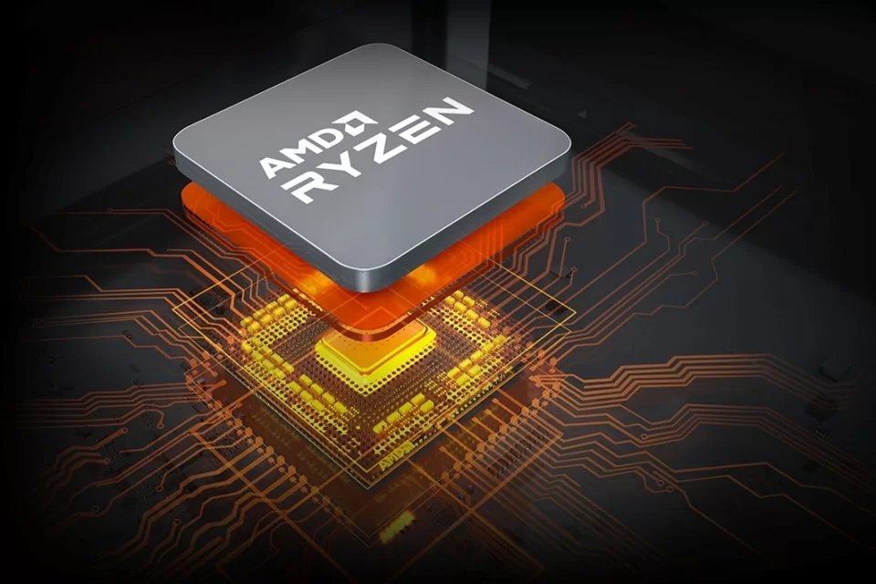

------------------------------------------------------------------------------------------------------------------------------------------------------------------------------------------------------------------------------------------------------------------------------------
Com o lançamento do Ryzen 7 8700g
------------------------------------------------------------------------------------------------------------------------------------------------------------------------------------------------------------------------------------------------------------------------------------
Uma das empresas mais famosas de tecnologia é a AMD (Advanced micro devises), A AMD é líder em computação adaptável e de alto desempenho, proporcionando produtos e serviços que ajudam a resolver os desafios mais importantes do mundo. Nossas tecnologias avançam no futuro dos mercados de data center, incorporados, jogos e PCs.
Fundada em 1969 como uma start-up do Vale do Silício, a jornada da AMD começou com dezenas de funcionários apaixonados por criar produtos de semicondutores de ponta. A AMD se tornou uma empresa global que define o padrão para a computação moderna, com muitos importantes avanços tecnológicos e inovações importantes no setor ao longo do caminho.
Vejá abaixo um Unboxing do processador